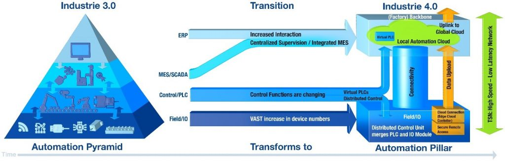

Por: Cleiton Santos – Especialista de Produtos
Muitos, provavelmente, já leram e/ou ouviram algo a respeito da pirâmide de automação, na qual as camadas se relacionam com o nível informacional de uma empresa. Todavia, com o desenvolvimento tecnológico e aumento da geração de dados, a pirâmide clássica, segundo alguns pesquisadores e disseminadores de opinião, vem se transformando em uma estrutura do tipo pilar.
O termo pirâmide de automação, muito utilizado no período que compreende a “Indústria 3.0” (também considerada a terceira revolução industrial), tem 05 componentes principais: dados de campo, dados de controle, sistemas SCADA, sistemas MES e sistemas ERP. Logo, observa-se que:
- Quanto mais baixo o nível, mais micro é o dado/informação;
- Por consequência, quanto mais alto o nível, mais gerencial é a informação/conhecimento.
Apesar da pirâmide de automação ser um modelo muito consolidado na indústria, o avanço e desenvolvimento tecnológico em direção à Industria 4.0 está fazendo com que algumas transições e transformações se evidenciem neste processo. Portanto, o termo “pilar de automação” visa trazer conceitos e metodologias para se adequar a esse novo contexto. A figura abaixo evidencia esse processo, a qual será brevemente explanada na sequência.
Figura 1 – Da pirâmide de automação ao pilar de automação – Fonte: Schoepf, T. J. (BELDEN Enterprise). The Road to Plug-and-Produce, 2016.
- Os dados de campos aumentarão de maneira [MUITO] expressiva com o uso cada vez mais comum de sensores e atuadores no chão-de-fábrica;
- Em alguns casos, os controladores poderão até mesmo ser remotos e/ou executados em nuvem, contribuindo para o controle descentralizado da operação;
- Por sua vez, as informações gerenciais serão centralizadas facilitando, portanto, a interação entre os níveis inferiores, assim como a tomada de decisão pelo gestor.
O pilar de automação em si apresenta, principalmente, 03 estruturas:
- Base inferior: dados de campo, ou seja, dados de controle se unem com CLPs e módulos I/O's; inclui neste processo os dispositivos para acesso remoto e equipamentos para coleta e processamento de dados (i.e., edge computing);
- Coluna de sustentação: conectividade, isto é, soluções robustas e redundantes que suportem todo o tráfego de dados gerado entre os dados de campo e o backbone; consistem em equipamentos ativos (switches, roteadores, firewalls, etc.) e passivos (conversores de mídia, cabos, etc.) pelo qual haverá links de comunicação;
- Base superior: processamento do dado/informação, ou seja, é o backbone do processo; região onde os dados serão processados e analisados, seja em nuvem local (servidores) ou em nuvem de algum provedor global (Amazon Web Services, Google Cloud, IBM Cloud, Microsoft Azure, etc.).
A depender da visão, vantagens e desvantagens podem surgir com essa transição de conceitos, mas uma coisa sabemos: o aumento exponencial de dados gerados no campo tem feito com que os processos e procedimentos industriais passem por alterações significativas. Sendo assim, a pergunta que fica é: até que ponto essas mudanças serão benéficas aos usuários?
Qual sua opinião? Acredita que o pilar de automação será o novo referencial das indústrias? Conta para nós!
Deixe seu comentário abaixo para entendermos sua visão sobre essa temática.